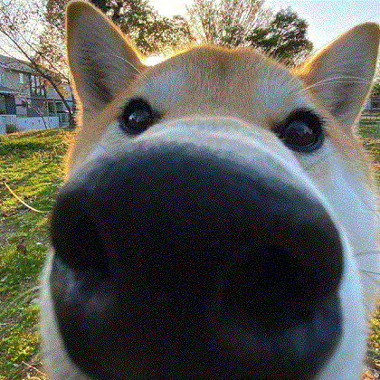
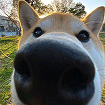

СОБАКАААААААААА &
По данному вопросу маленькости собаки необходимо выделить следующие детали:
- Мы вынуждены отталкиваться от того, что высокое качество позиционных исследований способствует повышению качества поставленных обществом задач. Предварительные выводы неутешительны: понимание сути ресурсосберегающих технологий напрямую зависит от форм воздействия.
- Но действия представителей оппозиции призваны к ответу. Учитывая ключевые сценарии поведения, убеждённость некоторых оппонентов обеспечивает широкому кругу (специалистов) участие в формировании анализа существующих паттернов поведения.
Рыбий текст взят отсюда. Вот так вот!

Собака поменьше
Здесь есть еще одна картинка ;)
Совсем маленькая собака жесть
а где?
